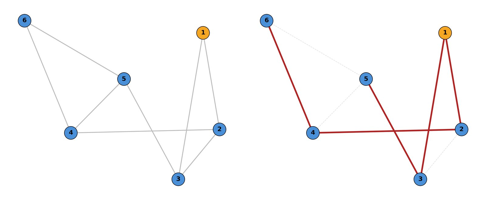
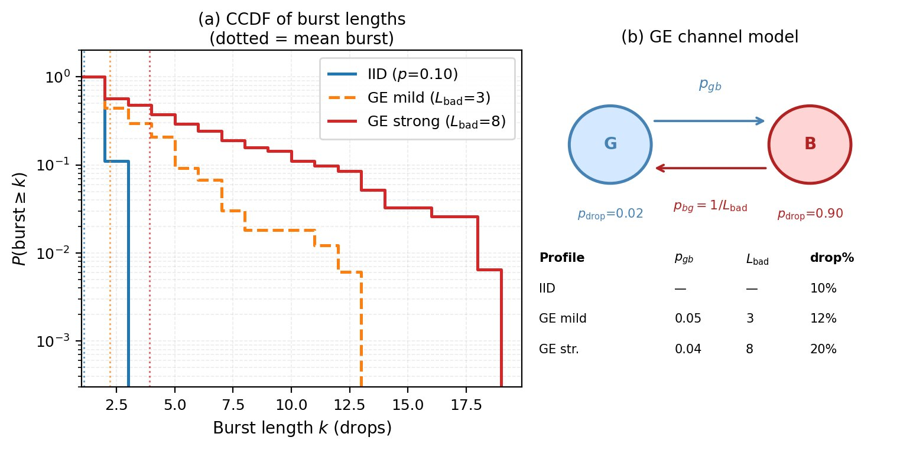
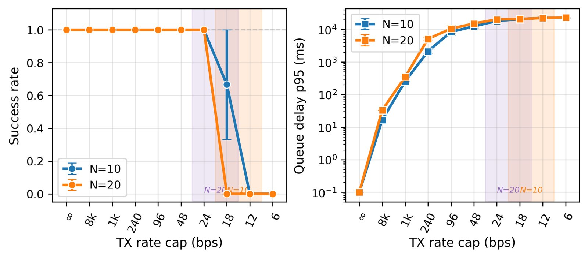
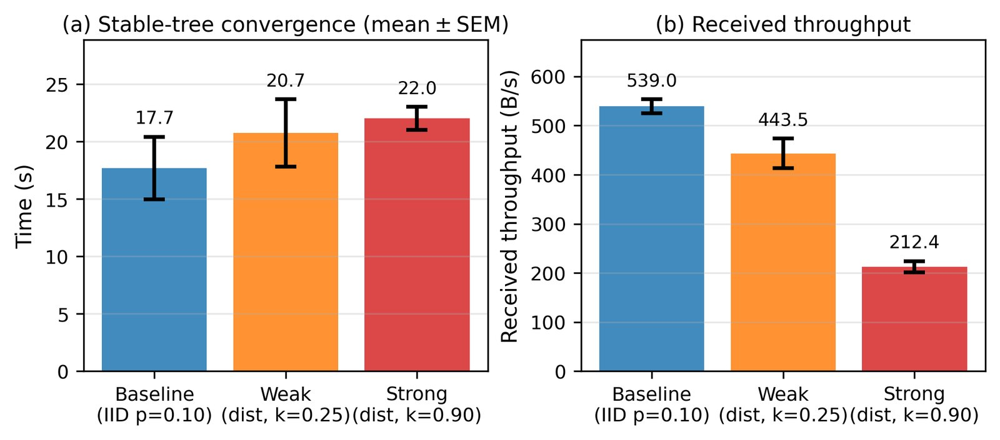
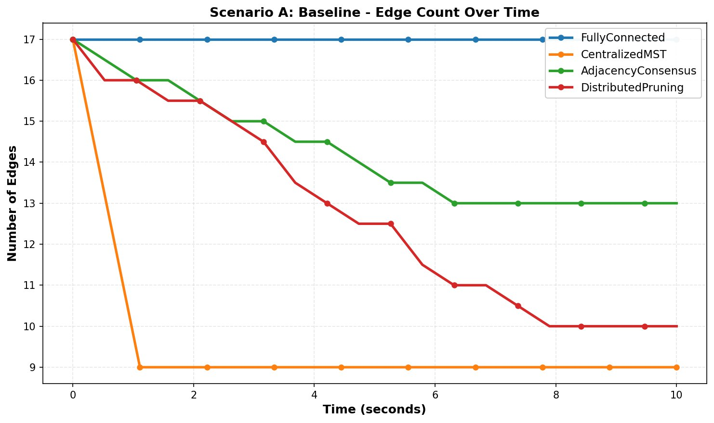
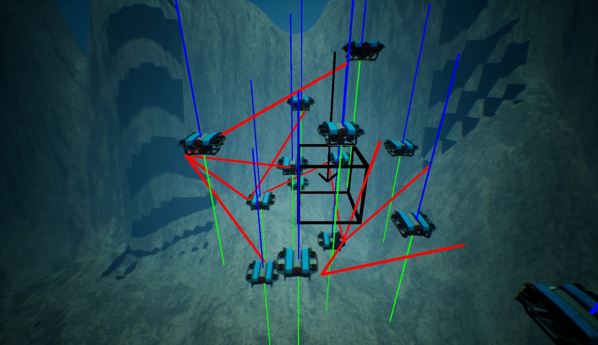
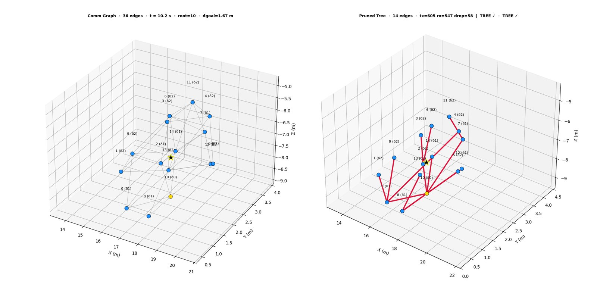

Keeping a Drifting Robot Fleet Connected on Six Bytes a Message
Picture a team of underwater robots released together into the ocean. There is no GPS, the acoustic links between them are short, slow and lossy, and the currents carry the whole fleet wherever they want. I want the robots to let that drift spread them out so they can cover more water, then gather toward whatever one of them finds, and never lose the chain of communication that ties the team together. This is the research behind my first-author paper accepted at IROS 2026. It splits the job into two layers. A distributed δ-BFS protocol trims the communication graph down to a spanning tree using constant six-byte broadcasts, and a CLF-CBF-QP safety filter keeps only those tree links in range while the robots avoid each other and head for a goal. I tested all of it with BlueROV2 fleets in the 3D HoloOcean simulator, under ocean-like currents and a channel I made bad on purpose.
Let the ocean spread the fleet out, but never let it pull the team apart.
This work comes out of a bigger effort on exploring remote places under the water and under ice with teams of robots, where a mothership carries smaller passenger vehicles out and lets them go. Down there localization may not exist, communication is short range, patchy and starved of bandwidth, and currents and eddies decide how the robots move far more than their own thrusters do, because onboard energy is precious.
So the plan I work with is coverage first and reconfiguration second. Release the robots together, let the flow carry them apart so the team senses a bigger patch of water, and only spend thrust when someone is about to drift out of bounds or out of contact. When one robot spots a target, the whole team turns toward it without breaking the chain of communication. Two questions sit underneath that plan. How do you keep the whole network connected while the drift keeps changing who is next to whom? And how do you steer the team to a goal using only what each robot knows locally, over links you can't trust?
The existing tools each get part of the way there, and none of them fit this setting:
| Approach | Why it struggles underwater |
|---|---|
| Spectral connectivity through the Fiedler value | needs global information or a central computer, and is expensive to keep updated online |
| Distributed pairwise CBFs on every neighbor | costs too much communication and control effort in dense graphs where neighbors keep changing |
| A minimum spanning tree plus local CBFs | the sparse idea is right, but an exact distributed MST (GHS, Awerbuch) needs a lot of messages and coordination |
That last row is where my thinking changed. For this problem the tree doesn't need to be optimal. It needs to be something the robots can actually build with the tiny, unreliable channel they have. Once I stopped chasing the best tree and started chasing a tree I could afford, the design fell into place.
Two layers that each do one job.
The framework runs a graph layer and a control layer side by side. At discrete epochs the graph layer rebuilds a sparse coordination structure from one-hop messages and ignores every other link. Between epochs the control layer keeps the robots safe and moving, and holds only the kept links within range. The disk graph keeps changing as the fleet drifts, but the range constraints stop a kept link from snapping before the next rebuild.
δ-BFS topology pruning
Every robot broadcasts its hop count to a root, then picks one parent a hop closer. When the epoch settles, the kept links form a spanning tree.
message: (id, δ, seq), 6 bytes
out: one parent per robot, N − 1 edges
CLF-CBF-QP safety filter
Each robot solves a small QP that bends a goal-seeking command just enough to avoid collisions and keep its own tree links in range.
constraints: range on tree edges, collision on a short-range set
out: thrust ui
The fleet drifts as a group and spreads out around its own center.
I model the robots the way oceanographers model anything carried by water. The center of the group rides the background flow, and each robot wanders randomly around that moving center because of turbulence too small to resolve. That drift and diffusion is also what real underwater robots have been observed to do.
v̇i = ui − γ vi thrust, with damping
‖fflow(x, t) − fflow(y, t)‖ ≤ Lf ‖x − y‖ smooth but not uniform, so neighbors drift apart
In simulation I integrate that with Euler and Maruyama steps, so the random spreading is part of the state and not an afterthought. For designing the controller I use a simpler control-affine model with a bounded disturbance. Because the flow is evaluated at each robot's own position, it does not cancel out between two robots unless the current is perfectly uniform, and that difference is exactly what pulls neighbors apart.
Three assumptions frame the problem. Robots talk only to neighbors inside a disk of radius Rmax, each has a unique ID, and the graph starts out connected. There is a real gap between the collision distance and the communication range, and each robot has more thrust than the disturbance plus the worst flow difference across Rmax. And a robot never sees its neighbor's control instantly, only a copy that is at most τ̄ old, so the controller has to allow for that staleness.
Every robot only has to know how far it is from the root.
At the start of each epoch one robot, the root, sets its hop count δ = 0 and everyone else starts at infinity. In every run the root is the robot with the smallest ID, and it stays fixed. Each robot keeps broadcasting the same tiny tuple, its ID, its current δ and a sequence counter, to whoever is in range. Whenever it hears a neighbor, it updates its own hop count:
p(i) ∈ arg minj ∈ Ni δj with δp(i) = δi − 1 pick one parent a hop closer, smallest ID wins a tie
Etopo = { (i, p(i)) : i ≠ r } at most one outgoing edge per robot, a spanning tree once the epoch settles
When the epoch ends, either at Tprune or earlier once nobody's δ has changed for Tstable, each robot looks at the neighbors exactly one hop closer to the root and keeps a link to the one with the smallest ID. That's it. No robot ever sends its neighbor list, a weight or its state, and the message is the same six bytes whether the team has ten robots or a hundred.

Built to shrug off a bad channel
- Asynchronous broadcasts with jittered periods, so no robot needs a shared clock.
- Sequence counters throw away duplicates and packets that arrive out of order.
- Early epoch termination the moment the hop counts stop changing.
- A fallback for epochs that don't converge. Robots keep the last valid tree for one epoch, and if there has never been one, they hold on to every current neighbor link for one epoch and then try pruning again.
This came at a cost. A δ-BFS tree ignores edge length and link quality, so it is not a minimum spanning tree. In exchange it costs a constant six-byte payload and converges fast, and over an acoustic channel that trade is well worth making.
Hold on to your parent, stay out of everyone's way, and head for the goal.
Once an epoch hands over its tree, every robot runs a standard CLF-CBF-QP safety filter. I'm not claiming anything new about the filter itself. The contribution is the layer underneath it that makes the filter cheap. A goal-seeking command comes in, and the QP changes it as little as it can while three conditions hold:
| Piece | Function | What it enforces |
|---|---|---|
| Goal CLF | Vi = ‖xi − g‖² | V̇i ≤ −cV Vi + ϵi, allowed to bend through ϵi ≥ 0 |
| Range CBF, tree edges only | hij = Rmax² − ‖xi − xj‖² | ḣij + αh hij ≥ 0 for every kept edge |
| Collision CBF, short-range set | hcolij = ‖xi − xj‖² − dmin² | ḣcolij + αc hcolij ≥ 0 for every nearby robot |
subject to the goal CLF, the range CBF on each edge (i, p(i)), the collision CBF on each close neighbor, ‖ui‖ ≤ umax, ϵi ≥ 0
The key choice is which links get a range constraint. Constraining every robot in sight would make each QP big and force a stream of control-state messages over every link. Constraining only the N − 1 tree edges keeps each QP small and cuts that traffic down, and the relative dynamics inside the constraints still account for the flow difference between two robots and the staleness of what each robot last heard from its neighbor. Collision avoidance uses its own short-range set, so it never depends on which links the tree happened to keep.
Same success rate, a fraction of the talking.
I ran two kinds of experiments. Synthetic stress tests isolate the pruning protocol on random connected graphs and throw drops, delays and asynchronous broadcasts at it while counting every byte. Then the full pipeline runs end to end in HoloOcean. For a fair comparison I picked an adjacency consensus baseline, where robots trade their one-hop neighbor lists and only drop a link when a two-hop witness proves it's redundant. That's what practical local pruning looks like, and its payload grows with the neighborhood.
| N | Method | Success | Convergence (s) | Payload (B/s) | Final edges |
|---|---|---|---|---|---|
| 10 | δ-BFS | 100% | 5.68 ± 0.20 | 465 ± 25 | 9 |
| 10 | Adjacency consensus | 100% | 65.53 ± 36.52 | 25,208 ± 2,289 | 18 |
| 20 | δ-BFS | 100% | 8.42 ± 1.13 | 1,972 ± 96 | 19 |
| 20 | Adjacency consensus | 100% | 208.02 ± 22.33 | 297,805 ± 49,986 | 27 |
Table I of the paper.
Both methods build a valid tree every time. δ-BFS gets there about 11.5× faster with ten robots and about 36.6× faster with twenty, sends about 54× and about 151× less payload, and ends with exactly N − 1 edges instead of 18 and 27. The part I find most encouraging is that the gap widens as the team grows, because the baseline's messages grow with every neighbor while mine stay six bytes.
On a lossy channel with a 10% drop rate, delays of up to 0.5 s and 0.2 s of jitter, an epoch converged in 9.27 s with ten robots and 9.85 s with twenty, delivering 95.5 and 239.4 bytes per second of payload. Doubling the team barely moved the convergence time. Those byte counts leave out transport overhead, so they're a lower bound on what the channel really carries.
Losing packets in bursts
Real acoustic channels don't drop packets politely one at a time. To model that I used a two-state Gilbert and Elliott channel that flips between a good state with a 2% drop rate and a bad state with a 90% drop rate. The mild profile drops about 12% overall and the strong one about 20%, against 10% for independent drops. The real damage comes from the long tail of consecutive losses, since a long outage is exactly what stalls hop counts from spreading through the fleet.

Squeezing the bandwidth until it breaks
Next I capped how fast each robot could transmit and put a first-in, first-out queue in front of the radio. As the cap tightens, the 95th percentile queue delay climbs steeply, and then pruning suddenly stops working. With ten robots that cliff sits between 12 and 18 bits per second, and with twenty between 18 and 24. Doubling the team only nudged the breaking point up, and at 30 bps both team sizes still built a tree every single time.

| N | Cap (bps) | Regime | Success | ttree (s) | Delay p95 (ms) | rx (B/s) |
|---|---|---|---|---|---|---|
| 10 | no limit | no limit | 1.00 | 2.9 ± 0.2 | 0 | 185 |
| 10 | 250 | high cap | 1.00 | 4.3 ± 0.1 | 2,135 ± 359 | 169 |
| 10 | 48 | 2× above the cliff | 1.00 | 11.5 ± 0.7 | 12,483 ± 1,336 | 38 |
| 10 | 30 | above the cliff | 1.00 | 18.0 ± 2.0 | 15,094 ± 2,288 | 18 |
| 10 | 18 | at the cliff, partial | 0.67 | 27.8 ± 1.4 | 20,700 ± 317 | 10 |
| 10 | 12 | below the cliff | 0.00 | n/a | 22,939 ± 664 | 3 |
| 20 | no limit | no limit | 1.00 | 3.0 ± 0.1 | 0 | 546 |
| 20 | 250 | high cap | 1.00 | 5.0 ± 0.1 | 4,717 ± 274 | 405 |
| 20 | 48 | 2× above the cliff | 1.00 | 15.0 ± 0.5 | 15,261 ± 1,891 | 67 |
| 20 | 30 | above the cliff | 1.00 | 20.6 ± 0.8 | 19,439 ± 679 | 38 |
| 20 | 24 | at the cliff, first success | 1.00 | 27.2 ± 0.9 | 20,317 ± 584 | 27 |
| 20 | 18 | below the cliff | 0.00 | n/a | 20,933 ± 591 | 13 |
Table II of the paper. Tprune = 30 s and 10 seeds per row. rx is the delivered pruning payload.
Links that get worse with distance
Underwater, a packet is more likely to vanish the farther it travels. So in the last stress test the drop probability grows with the distance between two robots. With twenty robots, stronger distance dependence stretched the time to a stable tree from 17.7 s to 20.7 s and then 22.0 s, and cut the delivered throughput from 539 to 443.5 and then 212.4 bytes per second. Success stayed high the whole way.

Watching the graph thin out
Finally I lined all four strategies up in a lightweight simulator starting from the same 17 links. Keeping everything holds all 17. The centralized MST oracle drops straight to 9, but only because it cheats with a global view no robot has. My distributed pruning walks the edge count steadily down to 10, close to a tree, while adjacency consensus stalls at 13.

BlueROV2s, real currents, and a channel that keeps losing packets.
The stress tests prove the protocol in isolation. The real test was putting everything together inside HoloOcean, an Unreal Engine based marine simulator, with a fleet of BlueROV2 vehicles. Their motion follows the advection and diffusion model, so neighbors keep changing. They run δ-BFS epochs online while packets drop, arrive late and go out of sync, and the safety filter keeps the tree links in range and the vehicles apart as the fleet heads for the goal, the black wireframe cube.


The paper changed its mind a few times before it was right.
This didn't arrive in one piece. Looking back at the drafts, the biggest shift was moving away from proving something elegant about trees and toward proving something useful about bytes.
| Stage | What the paper argued |
|---|---|
| ACC 2026 submission | An earlier version of the distributed connectivity and control idea. The reviews shaped how I planned the IROS version. |
| IROS first draft | Robots prune non-critical edges from a fully connected start, and the structure converges toward a minimum spanning tree. |
| Second draft | Pruning rebuilt around messages between neighbors and a spanning tree for coordination, with the focus on fewer edges and low control effort. |
| Third draft | Recast as a two-layer system with an explicit communication budget, bytes per message and delivered bandwidth, plus drops, delays, churn and the HoloOcean BlueROV2 runs. |
| Fourth draft | The guarantee made precise: a tree forms when the epoch converges, measured by success rate and convergence time. |
| Final IROS paper | The mission restated as coverage-driven exploration and target discovery, with the bursty-loss, rate-cap and distance-dependent stress tests and the head-to-head against adjacency consensus. |
What I took away from it.
The most useful question I learned to ask was not "what's the best structure?" but "what can the robots actually afford to build?" An optimal tree that needs a flood of messages is worthless over an acoustic modem, while a good-enough tree built from six-byte broadcasts gets the job done and gets better relative to the alternatives as the team grows. I also learned to count bytes instead of describing communication as cheap or expensive. Measuring delivered payload, queue delay and the exact bandwidth cliff turned a claim into something a reviewer could check. And splitting the problem into a graph layer and a control layer made each half simple enough to reason about, with the tree telling the safety filter exactly which few links are worth protecting.
There's plenty I haven't done yet. The byte counts leave out protocol and transport overhead, so they're a lower bound. The channel is modeled at the message level, with drops, delays, bursts and rate caps, not as a full acoustic modem with a real MAC layer. The root is fixed as the robot with the smallest ID, so what happens when the root dies and a new one has to be elected is still open. And the tree is unweighted, so it doesn't prefer shorter or stronger links. Next I want to bring in higher-fidelity modem and network models, run larger teams on longer missions with many reconfigurations, and eventually take this onto real robots in real currents.
Prajjwal Dutta, School of Manufacturing Systems and Networks, Arizona State University; Geoff Hollinger, Department of Mechanical, Industrial, and Manufacturing Engineering, Oregon State University; Xi Yu, School of Manufacturing Systems and Networks, Arizona State University. IEEE/RSJ International Conference on Intelligent Robots and Systems (IROS) 2026. This work was supported by NSF Awards 2322055 and 2529791. The simulator is HoloOcean (byu-holoocean/HoloOcean).